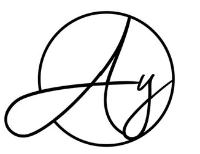

Work Experience:
In 2020-2021, an operations representative at the GD Sinai insurance agency
In this position I took responsibility for underwriting and providing administrative support to agents and representatives. My main tasks included cooperation with large insurance companies such as Menorah, Migdal, Harel and more. During this period, I successfully managed various aspects of operations, contributed to the efficient functioning of the agency and improved customer relations.In the years 2022-2023 I served as a telephone sales representative at "I deserve a tax credit"
In this dynamic role, I took on the crucial responsibility of nurturing relationships with both existing and potential clients. My impactful contributions have centered on identifying strategic opportunities to expand sales, increase customer satisfaction and properly manage contracts to bring about a successful deal close.In addition, I played a central role in the supervision and management of the database, mainly in Excel. This multifaceted responsibility added more knowledge to my role, and demonstrated my data management and organizational skills.

Experiences:
Rothschild Foundation Scholarship - My Wave Association Works with the aim of providing a real opportunity to girls and boys in risk situations. I was responsible for the media in the entire northern region. It is one of the best experiences of my life.

Embarking on the journey of establishing "A.Y Jewelry" has been both challenging and immensely gratifying. Despite being in its early stages, building this business stands out as one of the most demanding yet fulfilling endeavors I've undertaken in my life.
